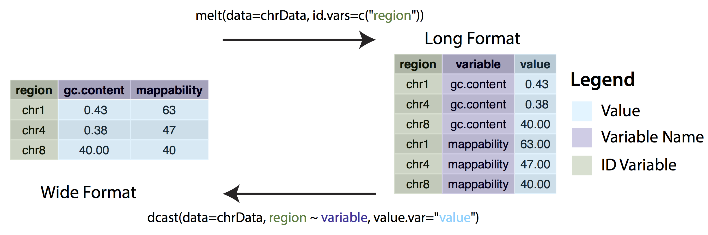

5 Tidy Data
“Todos los tidy datasets se parecen unos a otros, pero todos los untidy datasets lo son a su manera.”
— Hadley Wickham
5.1 Necesidad de ordenar la información antes del análisis
Los que han trabajado analizando datos recordarán que una de las grandes dificultades es la limpieza de los mismos. Sin embargo otra práctica escencial que no se debe olvidar antes de poder realizar cualquier tipo de cálculo o análisis es su ordenamiento.
Esta sección se dedicará a explicar la filosofía del tidy data, la cual consiste en exponer una forma de ordenar los datos a través de reorganizar los distintos datos que se puedan encontrar en el día a día.
Primero introduciremos algunos terminos para poder ejemplificar mejor algunos de los problemas más comunes en la organización de los datos.
5.1.1 Definiciones
- Dataset: Colección de valores, los cuales pertenecen a una observación y a una variable. Normalmente se encuentran registrados de manera tabular con filas y columnas.
- Variable: Contiene todos los valores que miden la misma característica de las “unidades de medición”, i.e. peso, altura, temperatura, etc…
- Observación: Contiene todos los valores medidos de una “unidad de medición” a través de las diferentes variables.
- Tidy dataset: Llamaremos tidy u ordenado a un dataset que cumpla con
los siguientes tres principios en su estructura:
- Cada variable es una columna.
- Cada observación es un renglón.
- Cada tipo de unidad de medición forma una tabla.
5.1.2 ¿Cuáles son los posibles problemas de estos datos?
Algunas de las causas para que estos datos no cuenten con el formato adecuado:
- Los encabezados de las columnas son variables.
- Múltiples variables son guardadas en una sola columna.
- Las variables son guardadas en renglones y no en columnas.
A continuación se presentan algunos ejemplos de tablas “desorganizados”.
| persona | tratamiento_a | tratamiento_b |
|---|---|---|
| Joel Sosa | 12 | NA |
| Alfredo Jiménez | 15 | 17 |
| Alberto Negrete | 16 | 22 |
La tabla 5.1 muestra datos de tres individuos, con respecto a dos tratamientos médicos.
Se puede apreciar como las dos columnas de la tabla se muestran etiquetas de variables.
| X | id | year | month | element | d1 | d2 | d3 | d4 | d5 |
|---|---|---|---|---|---|---|---|---|---|
| 1 | MX000017004 | 2010 | 1 | TMAX | NA | NA | NA | NA | NA |
| 2 | MX000017004 | 2010 | 1 | TMIN | NA | NA | NA | NA | NA |
| 3 | MX000017004 | 2010 | 2 | TMAX | NA | 273 | 241 | NA | NA |
| 4 | MX000017004 | 2010 | 2 | TMIN | NA | 144 | 144 | NA | NA |
| 5 | MX000017004 | 2010 | 3 | TMAX | NA | NA | NA | NA | 321 |
| 6 | MX000017004 | 2010 | 3 | TMIN | NA | NA | NA | NA | 142 |
Este conjunto de datos representa la información meteorológica, temperatura mínima y máxima de los primeros tres meses del 2010.
En 5.2 se presenta la columna element con dos indicadores de variables, la temperatura máxima y la mínima así mismo un ordenamiento para los días de cada mes hacia la derecha que hace dificil elaborar cálculos para el análisis.
5.1.3 Ejercicio: Identificar el data set
| mes | 2014 | 2015 | 2016 | 2017 | 2018 |
|---|---|---|---|---|---|
| enero | 84.51905 | 87.11010 | 89.38638 | 93.60388 | 98.79500 |
| febrero | 84.73316 | 87.27538 | 89.77778 | 94.14478 | 99.17137 |
| marzo | 84.96529 | 87.63072 | 89.91000 | 94.72249 | 99.49216 |
| abril | 84.80678 | 87.40384 | 89.62528 | 94.83893 | 99.15485 |
| mayo | 84.53558 | 86.96737 | 89.22561 | 94.72549 | 98.99408 |
| junio | 84.68207 | 87.11311 | 89.32403 | 94.96364 | 99.37646 |
| julio | 84.91496 | 87.24082 | 89.55691 | 95.32274 | 99.90910 |
| agosto | 85.21997 | 87.42488 | 89.80933 | 95.79377 | 100.49200 |
| septiembre | 85.59634 | 87.75242 | 90.35774 | 96.09352 | NA |
| octubre | 86.06963 | 88.20392 | 90.90615 | 96.69827 | NA |
| noviembre | 86.76378 | 88.68547 | 91.61683 | 97.69517 | NA |
| diciembre | 87.18898 | 89.04682 | 92.03903 | 98.27288 | NA |
Finalmente en la tabla 5.3 se muestra la revalorización del INPC hecha por el INEGI el pasado mes de agosto.
- ¿Qué podríamos decir de este conjunto de datos?
- Si quisieramos obtener el crecimiento porcentual entre cada periodo, ¿es conveniente el formato que tiene actualmente?
- ¿Qué modificaciones le deberíamos hacer a la estructura de la tabla para que sea un conjunto de datos tidy?
5.2 Formatos Wide (ancho) and Long (largo)
Como su nombre lo indica, los datos que se encuentran en un formato Ancho son aquellos que contienen información para una misma medida en diferentes columnas. El nombre de las columnas indica la variabla de la cual se está recolectando la información. Un claro ejemplo de datos anchos es la tabla 5.3
En cambio los datos en formato Largo son aquellos que utilizan columnas independientes para guardar las variables de cada observación. Se presenta la siguiente tabla como un ejemplo de cómo se ve la transformación de una tabla Ancha a un formato Largo.
| TIME_PERIOD | OBS_VALUE |
|---|---|
| 2014-01-01 | 84.51905 |
| 2014-02-01 | 84.73316 |
| 2014-03-01 | 84.96529 |
| 2014-04-01 | 84.80678 |
| 2014-05-01 | 84.53558 |
| 2014-06-01 | 84.68207 |
| 2014-07-01 | 84.91496 |
| 2014-08-01 | 85.21997 |
| 2014-09-01 | 85.59634 |
| 2014-10-01 | 86.06963 |
| 2014-11-01 | 86.76378 |
| 2014-12-01 | 87.18898 |
| 2015-01-01 | 87.11010 |
| 2015-02-01 | 87.27538 |
| 2015-03-01 | 87.63072 |
| 2015-04-01 | 87.40384 |
| 2015-05-01 | 86.96737 |
| 2015-06-01 | 87.11311 |
| 2015-07-01 | 87.24082 |
| 2015-08-01 | 87.42488 |
| 2015-09-01 | 87.75242 |
| 2015-10-01 | 88.20392 |
| 2015-11-01 | 88.68547 |
| 2015-12-01 | 89.04682 |
| 2016-01-01 | 89.38638 |
| 2016-02-01 | 89.77778 |
| 2016-03-01 | 89.91000 |
| 2016-04-01 | 89.62528 |
| 2016-05-01 | 89.22561 |
| 2016-06-01 | 89.32403 |
| 2016-07-01 | 89.55691 |
| 2016-08-01 | 89.80933 |
| 2016-09-01 | 90.35774 |
| 2016-10-01 | 90.90615 |
| 2016-11-01 | 91.61683 |
| 2016-12-01 | 92.03903 |
| 2017-01-01 | 93.60388 |
| 2017-02-01 | 94.14478 |
| 2017-03-01 | 94.72249 |
| 2017-04-01 | 94.83893 |
| 2017-05-01 | 94.72549 |
| 2017-06-01 | 94.96364 |
| 2017-07-01 | 95.32274 |
| 2017-08-01 | 95.79377 |
| 2017-09-01 | 96.09352 |
| 2017-10-01 | 96.69827 |
| 2017-11-01 | 97.69517 |
| 2017-12-01 | 98.27288 |
| 2018-01-01 | 98.79500 |
| 2018-02-01 | 99.17137 |
| 2018-03-01 | 99.49216 |
| 2018-04-01 | 99.15485 |
| 2018-05-01 | 98.99408 |
| 2018-06-01 | 99.37646 |
| 2018-07-01 | 99.90910 |
| 2018-08-01 | 100.49200 |
Existen dos operaciones fundamentales para transformar la estructura de la tabla melt() y cast().
melt(): Sirve para agrupar las variables que se encuentran en columnascast():

Estas operaciones pueden presentarse con otros nombres, dependiendo de la paquetería que utilicen; con dplyr las funciones son gather() y spread(), en data.table utilizaremos melt.data.table() y dcast.data.table() y finalmente las que usaremos en los siguientes ejercicios se encuentran en el paquete reshape2 son melt() y dcast().
Pueden consultar el siguiente enlace en Data_Camp para reforzar los conceptos.
El siguiente video es un resumen completo de lo que hemos visto hasta ahora.